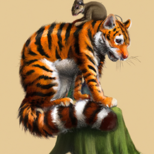

About Pou
Pou is a virtual pet game developed and published by Zakeh. The game features a cute and lovable character named Pou that players can take care of. Pou is a rounded, triangular-shaped alien creature with small eyes, a small mouth, and two brown antennas on its head.
In the game, players are responsible for feeding, cleaning, playing with, and nurturing Pou. The character requires regular care and attention to stay happy and healthy. Players can earn coins to buy food, clothing, and accessories for Pou by completing various tasks and activities.
Pou can also interact with other players' Pous by connecting to the internet. Players can visit their friends' Pous and play games together or send gifts to each other. There are also mini-games within the game that players can play to earn additional coins and unlock new items.

Pou has gained popularity due to its adorable design and engaging gameplay. It has been downloaded millions of times and has a large community of players worldwide. The game continues to receive updates and new features to keep players entertained and engaged.